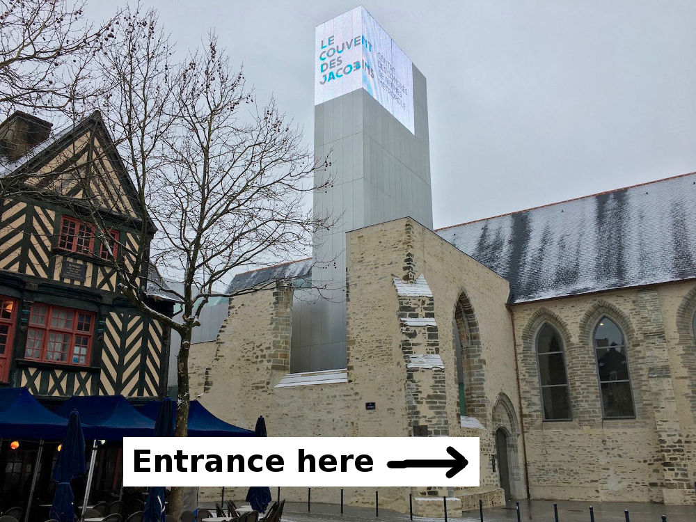
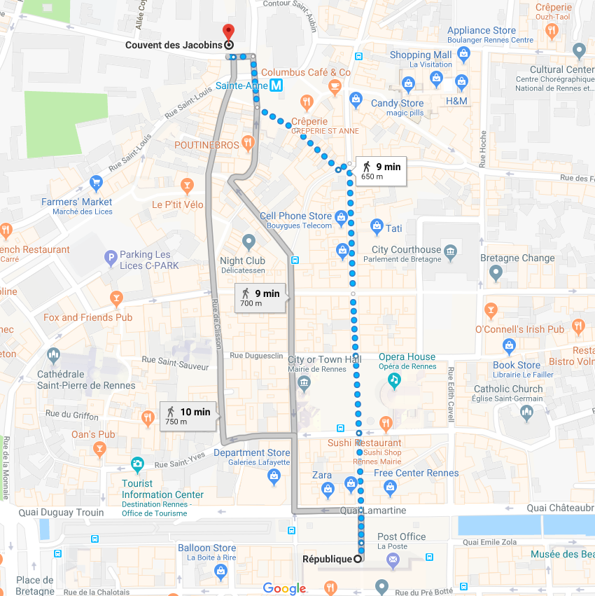

Two social events will take place during the conference:
- Reception at the city hall on Wednesday December 12th at 7:30pm
- Gala dinner at Couvent des Jacobins on Thursday December 13th at 7:30pm
Reception on Wednesday December 12th
The reception, graciously provided by the municipality of Rennes, will take place in the city hall at 7:30pm. Light drinks and snacks will be served. Do not forget to bring your invitation ticket!
Getting there: take a bus to the “République” stop in the city center (bus lines C4, C6 or 40) then the city hall is reachable in 2 minutes on foot.
Gala dinner on Thursday December 14th
The gala dinner will take place at Couvent des Jacobins at 7:30pm. Do not forget to bring your invitation ticket!

Getting there: take a bus to the “République” stop in the city center (bus lines C4, C6 or 40) then the city hall is reachable in 10 minutes on foot.
